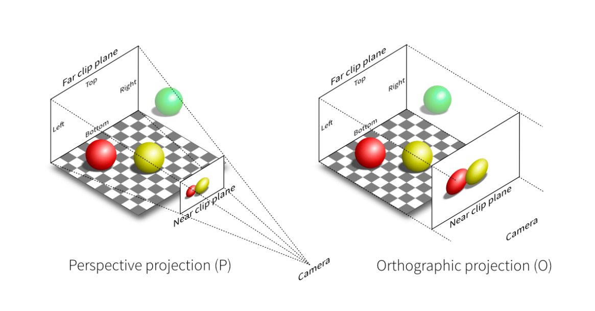
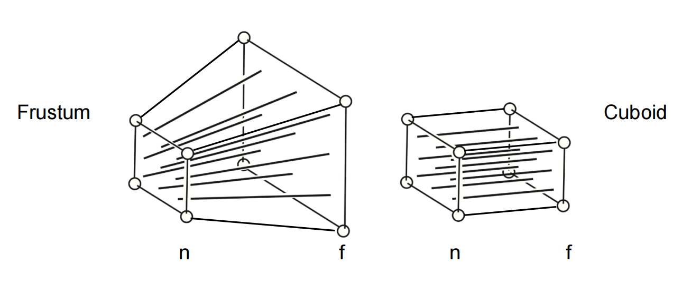
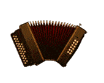
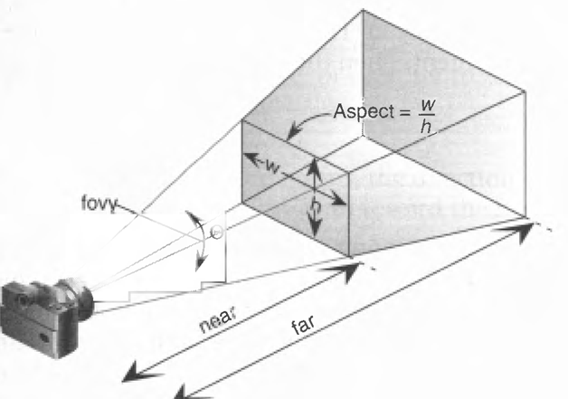

透视投影矩阵
透视投影有远小近大的效果，符合人视觉上看到东西。它和正交投影矩阵最大区别就是有了远小近大的视觉效果，下面是一张对比图：
图片来自 games101
上图中，左边是透视投影矩阵，右边是正交投影矩阵。透视投影矩阵有一个视点，一个近平面和远平面，近平面即为我们希望展示在屏幕上的画面。
想要计算场景中的物体在近平面的大小其实并不难，因为从视点出发看到物体的每一条视线都会经过近平面，就像拿着一空的大相框，透过相框向外看一样，我们需要计算的则是视线远方的物体根据视线在相框上的投影。
使用矩阵可以完成这个变换，让坐标根据 Z 分量产生缩放。正交投影矩阵对空间产生的形变如下：
图片来自 games101
上图中，正交投影的效果就类似以近平面为杠杆，通过对某一个远平面进行压缩，让所有的视线都平行的变换。这种变换就类似演奏手风琴时的效果：
图片来自https://5b0988e595225.cdn.sohucs.com/images/20190621/9f03189702fa4b69b80550478bce1ab3.gif
推导
根据 OpenGL 和 webgl 的坐标系，渲染的时候都是沿着 Z 轴负方向上看的，所以推导的时候就按照 OpenGL 和 webgl 的坐标系进行推导。
现在取一个 ZY 切面，从侧面来观察透视效果：
.jpg)
上图中， n 和 f 来指定视点到近平面和远平面的坐标值。原点画出一条视线穿过了近平面和远平面，形成两个焦点 Pf 和 Pn。
n 和 f 可以是坐标值（有正负号），也可以是距离即绝对值，因为使用绝对值计算时还需手动要考虑符号，为了简便，此处我们先不考虑符号，使用坐标值来计算。后面会再讨论 n 和 f 是距离的情况。
回看前面手风琴的图片，我们现在需要做的就是把 Pf 点的 X 和 Y 坐标挤压得和 Pn 坐标一样，并且近平面上点的坐标保持不变。我们必须求得一个矩阵满足这个挤压效果，在此之前，我们先观察下上图中，点 Pf 和 Pn 的关系。
不难看出，近平面和远平面与射线还有 Z 轴划分出了两个三角形，并且这两个三角形相似。那么就有：
$$y' = \frac{ny''}{f}, y'' = \frac{fy'}{n} $$
同理在 ZX 截面下，也有：
$$x' = \frac{nx''}{f}, x'' = \frac{fx'}{n} $$
设 Pf' 是 Pf 挤压后的坐标，Pn' 是 Pn 挤压后的坐标，从上面几个式子可以得出 Pf' 和 Pn'为：
接着我们分析齐次坐标下，一个点 q 被矩阵变换后的结果点 q' 如何计算：
令：
$$w = Mx + Ny + Oz + P$$
根据其次坐标的定理，w 分量归一化后其他分量就对应了空间中的坐标。所以我们对 q' 进行归一化得到：
Pf' 表示远平面上某个点经过这个矩阵挤压后的结果，而 q' 表示场景中某个点经过这个矩阵挤压后的结果，也就是 q' 也可以用来表示 Pf'。我们把对应分量进行对应，即可以推导这个矩阵。对齐 X 和 Y 轴上的分量，即：
$$ \frac{nx''}{f} = \frac{Ax'' + By'' + Cz'' + D}{w} $$
$$ \frac{ny''}{f} = \frac{Ex'' + Fy'' + Gz'' + H}{w} $$
Pf' 在远平面上，所以 $z''$ 是固定的，又要使得任意的 $x''$ 和 $y''$ 都成立，那么 ABCD 必定为：n、0、0、0。同理 EFGH 为 0、n、0、0。
接着来看分母部分，我们再展开 w，则有：
$$f = Mx'' + Ny'' + Oz'' + P $$
前面提到，f 表示的坐标值，即 $z'' = f$，所以上面式子又为：
$$f = Mx'' + Ny'' + Of + P $$
不难看出，MNOP 分别是 0、0、1、0。那么 w 则为：
$$ w = 0x + 0y + 1z + 0 = z，即 w = z$$
有些混乱的小伙伴可能会觉得，难到不会有 $M = \frac{f}{x''}$ 其余几个为 0 的情况吗，上式不也会成立。但是这种推导是错的，矩阵的因子肯定是常数，n 和 f 也是在计算的时候也是输入值常数，只有顶点坐标才是动态的变量，$z'$ 和 $z''$ 只是正好表示远平面和近平面上的点所以可以使用 n 和 f 代替。
从 Pf' 和 Pn' 的值来看，Z 轴坐标在远平面和近平面都没有发生变换，把这两个坐标带入 q' 的 Z 轴坐标，则有：
$$\frac{Ix' + Jy' + Kz' + L}{z'} = z',\frac{Ix'' + Jy'' + Kz'' + L}{z''} = z'' $$
注意 $x',y',x'',y''$ 都是不确定的，可以是任意值，但是他们并不影响上式成立，所以 I 和 J 都是 0，它们不参与计算，简化为：
$$\frac{Kz' + L}{z'} = z',\frac{Kz'' + L}{z''} = z'' $$
前面说到，n 和 f 的定义是坐标值，n 和 f 正好对应 z' 和 z''，带入则为：
$$\frac{Kn + L}{n} = n,\frac{Kf + L}{f} = f$$
解得：
$$K = n + f, L = -nf$$
所以这个挤压的矩阵实际上是：
这个用来挤压空间的矩阵结束了，整个空间都受到了挤压，我们完成了下面这幅图上的挤压效果：
图片来自 games101
然而新的问题来了，webgl 能看到的区域是 [-1, 1]，我们挤压的是 Z 轴后面近平面到远平面的区域，我们应该把这部分局域移动到 [-1, 1] 的区间上。这就用到了正交透视投影。所以一个透视投影矩阵应该 $M透视 = M正交M挤压$，回顾《正交投影矩阵》中的计算结果，带入得到：
这就是透视投影矩阵的最终结果。很遗憾，这个式子虽然是对的，但是不能直接作用于 webgl，后文会介绍为什么不能。
挤压矩阵 Z 坐标非线性
webgl前面我们一直在强调，挤压矩阵对于远平面和近平面的上点的 Z 坐标没有产生变换，也由此得到重要的一步计算：
$$\frac{Kn + L}{n} = n,\frac{Kf + L}{f} = f$$
那么其他地方的 Z 坐标有没有发生变换呢？在不使用挤压矩阵的时候，Z 轴坐标没有发生变换，把对角线单位矩阵看做一个函数 E，那么不使用挤压变换时 Z 坐标的输入输出是一样的，有：
$$ E(Zinput) = Zout = z$$
使用挤压矩阵后，Z 坐标输入输出则是：
建立一个直角坐标系，以 Zinput 作为 x 轴，Zout 作为 y 轴，那么绘图得：
.jpg)
由此可以看出，挤压矩阵对于 Z 坐标是非线性的变换，并不是简单的照搬之前的 Z 坐标。并且位于 n 到 f 的区间内，Z 坐标明显更远了，大于输入的值。
对于这个变换，计算机里面还有一个难以处理的事情就是，当渲染的点的 Z 坐标靠近 f 即靠近远平面时，这些数值被挤压得很相近，又因为着色器里面都是浮点计算，你懂的，靠近远平面的点会出现计算就会产生误差，甚至出现前后颠倒的情况。这就是为什么打游戏的时候，远处的某些材质会出现闪烁的情况，因为 Z 坐标算不准。目前比较好的方法就是减少 n 和 f 的差值，即视野不要拉得太长。
webgl 中齐次坐标分量不能为负值
前面我们费心费力的推导的透视投影矩阵并不能直接在 webgl 中使用，来看下原因。
现在我们可以验算一下前面推导的 $M透视$ 矩阵，因为相关参数都是坐标值，我们就依次取为 $r=1, l=-1, t=1, b=-1, n=-1, f=-3$。上下左右都没问题，近平面设置到了 -1，远平面设置到了 -3。根据右手坐标系，因为有挤压矩阵，Z 轴 [-1 , -3] 的区域被正确的挤压了，因为正交投影矩阵，Z 轴 [-1, -3] 的区域又被映射到了 [1, -1] 区间上，使得图像正常移动在 webgl 渲染区域。根据假定的值，$M透视$ 为：
此时带入近平面和远平面的任意坐标进行验算，得到的结果都是正确的。但是有一个问题就是，webgl 中计算齐次坐标时，w 分量为负值会直接抛弃本次计算，网上找了一大堆找不到答案，这是我在问 chatGPT 知道的。
webgl 着色器计算过程中，当顶点坐标的 w 分量为负值时，被视作该坐标在视锥的负方向，则抛弃后续的计算。这句话不具备权威性，但事实就是，webgl 的确不会渲染 (0,0,0,-1) 这个点，即使归一化后就是 (0,0,0,1)，但是 webgl 会抛弃对这个点的后续计算。
问题来了，我们推导的 $M挤压$ 这个矩阵第四行第三个分量是 1，这个正好对应了计算顶点坐标时，第四个分量 w，就是本段前面对点 q 进行变换时未归一化之前的第四个分量，它将是一个 z 值。又因为前面说到 webgl 计算顶点时，w 分量为负值则会不继续计算，所以我们上面得到的 $M透视$ 矩阵在 webgl 中的问题就是，它只能计算 Z 值大于 0 的顶点。
解决方案有多个，既然这个矩阵只能计算 Z 值大于 0 的点，我们把视野方向换到 Z 轴正方向即可。在前面的推导中，我们 n 和 f 使用的是坐标值，如图：
我们根据上图进行推导，所以传递时 0 > n > f，现在我们反过来朝向 Z 轴正方向看，那么传递的 n f 关系则变为 f > n > 0，现在我们就能看到 Z 坐标是 n 到 f 的点了。虽然渲染上没什么问题了，但是这对于右手坐标系来说有点反人类。
切换坐标系
还有一个问题就是前面的推导是基于右手的，然而 webgl 是左手坐标系，所以最后这个矩阵还要左乘一个可以切换到右手坐标系的矩阵才行。然而这个矩阵后续就算推导出来也不适用于工程中，但公式不是白推的，有兴趣的话去查看我的另一篇文章《透视投影矩阵应用1》，里面会完成前面的推导并实际使用。
绝对距离推导
在【webgl 中齐次坐标分量不能为负值】一段中我们说了 webgl 中顶点坐标为负值时不会继续计算，这让我们前面推导出的 $M透视$ 矩阵没法跟着直觉使用，以至于我们需要通过看向 Z 轴正方向来计算，这让右手坐标系玩家使用起来很反人类。
万幸的是，另外一种推导方式得出来的透视投影矩阵可以让我们在 webgl 中直接使用。那就是让 n 和 f 表示为距离绝对值，而非一个坐标值，让我们带入正负号推导新的透视投影矩阵。还是看看这个图：
后续的推导是根据前文推导挤压矩阵的逻辑来，只是修改了部分参数，重复的逻辑将不再赘述。
现在 n 和 f 都是距离的绝对值，近平面和远平面上的 z' 和 z'' 就有了新的关系：
$$z' = -n, z'' = -f$$
对于：
$$ \frac{nx''}{f} = \frac{Ax'' + By'' + Cz'' + D}{w} $$
$$ \frac{ny''}{f} = \frac{Ex'' + Fy'' + Gz'' + H}{w} $$
我们推导的 ABCD EFGH 和原本的推导相比没有变化，ABCD 依次是 n、0、0、0，EFGH 依次是 0、n、0、0，但是对于分母 f 和 w 有：
$$f = Mx'' + Ny'' + Oz'' + P $$
因为现在 $z'' = -f$，所以会转化为：
$$f = Mx'' + Ny'' + O(-f) + P $$
上式要成立，MNOP 就必须为 0、0、-1、0，即任意一点的 w 分量为：
$$ w = 0x + 0y + -1z + 0 = -z $$
把 $w = -z$ 带入变换后的 Z 坐标上有：
$$Z输出 = \frac{Ix + Jy + Kz + L}{-z} $$
同样近平面和远平面上的 Z 坐标输入输出相同，所以有：
$$\frac{Ix' + Jy' + Kz' + L}{-z'} = z',\frac{Ix'' + Jy'' + Kz'' + L}{-z''} = z'' $$
要使得这个式子成立，I 和 J 就必定为 0 ，所以可以简化为：
$$\frac{Kz' + L}{-z'} = z',\frac{Kz'' + L}{-z''} = z'' $$
带入：$$z' = -n, z'' = -f$$
得到：$$\frac{K(-n) + L}{-(-n)} = -n,\frac{K(-f) + L}{-(-f)} = -f $$
解得：$$K = -n - f, L = -nf$$
即基于 n 和 f 是距离绝对值而非坐标值时，新的挤压矩阵为：
万事大吉，第四行三列变成了 -1，现在我们可以在 webgl 中直接用来渲染着 Z 轴负方向上的点。
但是不要掉以轻心，$M透视 = M正交M挤压$，所以我们还要乘一个正交投影矩阵。然而正交投影矩阵中的 n 和 f 是坐标值，我们是按照右手坐标系来推导的，所以我们可以把 -n 和 -f 当做正交矩阵的近点值和远点值，那么新的 $M正交$ 就是：
$M透视$ 则为：
还没完，这个矩阵还不能直接在 webgl 中使用，看下一节。
webgl 透视投影矩阵
现在还有一个问题就是 webgl 使用的是左手坐标系，【绝对距离推导】中我们用的都是右手坐标系，即使把 n 和 f 修改为数值后带入了 -n 和 -f，坐标系还是右手。所以我们还需要再翻转 Z 轴，即：
自此，终于推导出能够在 webgl 中按照右手坐标系来使用的透视投影矩阵了。
这个公式还能简化，想一想，我们做透视投影矩阵之前，肯定要先进行模型变换，然后再进行视图变换摆好相机，最后才进行透视投影变换。所以我们进行透视投影变化的时候，一定是物体摆好了，相机摆正了，我们已经看向的是中心点。那么 r 和 l，t 和 b 就正好是相反数，有：$r = -l,t = -b$。带入前面两个式子，上述结果可以进一步简化：
可以看到这个矩阵的变量又减少了两个，现在就是 r 和 t，right 和 top 值虽然直观，但是在实践过程中总是不太方便，想象一下，近平面是一个相框，设置 n 和 f 可以体现远近感，但是设置 r 或者 t 只能在某一个方向伸缩这个相框。
现在尝试用其他方式来替代 r 和 t，看看这张图：
图片来自 http://what-when-how.com/opengl-programming-guide/projection-transformations-viewing-opengl-programming/
图中提供了视线的仰角角度 fov，还有近平面的宽高比 Aspect，使用角度和纵横比，我们可以等比例发大近平面。 仰角角度、纵横比和 t、r、n 的关系为：
$$\frac{t}{n} = tan(\frac{fov}{2})，即：t = tan(\frac{fov}{2}) n$$
对于给定的宽高比 Aspect，有：
$$\frac{r}{t} = Aspect，带入前面的 t 有：r = tan(\frac{fov}{2})n*Aspect$$
把新的 r 和 t 带入透视矩阵可以得到：
好的事不宜迟，我们来看看工程上如何实现透视投影矩阵，以下是 gl-matrix 库实现的透视投影矩阵，可以直接在 webgl 中使用：
可以看到和我们推导的公式完全一致。
尾语发泄
我日他mmp，我真是历经千辛万苦的踩坑萌新，虽然一个月前就跟着 games101 的闫老师推导过挤压矩阵，但是当时压根还没学 webgl，我看着自己最初推导的公式，和人家工程开发的横竖不一样就算了，自己的压根用不了。我也没推导错误，甚至一个坐标一个坐标带入自己推的矩阵算都是对的，但是奈何一堆坑等着我慢慢踩。
首先第一个就是 webgl 着色器在计算过程中，顶点坐标的第四个分量为负值就会抛弃渲染。这个我在网上硬是找不到一篇帖子，也不想去翻 OpenGL 的文档查，卡了我一天多，拿着一个公式又是验算，又是敲代码验证一天多你敢想？后来想起来问 ChatGPT，得到了一点点思路。然后手写例子去验证，发现 $(0,0,0,-1)$ 这个点 webgl 的确不渲染。但是 games101 给出的公式结果就是会让所有小于 0 的坐标都触发这个问题。嗐~。痛定思痛，我开始研究 n 和 f 不是坐标值，而是距离绝对值的透视投影矩阵公式，终于推导出接近工程上使用的那个透视矩阵，但是但是但是。
webgl 是左手坐标系！！！我推导一直是按照右手坐标系去推导，这就造成了第二个问题，远小近大是有了，但是他奶奶的远的物体会挡住近处的物体。 好搞，虽然看着自己推出的公式和人家工程上的的确不一致，但是死活想不明白，我错在哪儿？为啥子会这样？突发奇想用谷歌搜索“webgl 是左手坐标系还是右手坐标系”，终于看到一篇帖子说是左手。 我抱着试一试的心态画了两个三角形，开启深度缓冲然后调整 Z 值，你猜怎么滴？Z 值大的被 Z 值小的三角形挡住了。 哈哈哈哈哈哈哈啊哈哈哈哈哈哈哈哈哈哈哈哈哈哈哈，国内饭圈真牛逼，学不懂就别发文啊，要发文就要发对啊，别出来误人子弟好吧，国内帖子 10 篇有 9 篇都说 webgl 是右手坐标系，真的是张口就来，我真的服了个龟儿子些。
在此当然圈名表扬我们的 bd，这哪里是踩坑？这简直是掉进洞里。我都不好意思把图片截全，第一页所有帖子全部写的 webgl 是右手坐标系，真就复制粘贴呗。
图片来自百度
参考
- https://www.zhyingkun.com/markdown/perspective/
- https://glmatrix.net/
- http://what-when-how.com/opengl-programming-guide/projection-transformations-viewing-opengl-programming/
- games101
- https://www.scratchapixel.com/lessons/3d-basic-rendering/perspective-and-orthographic-projection-matrix/building-basic-perspective-projection-matrix.html
- https://www.scratchapixel.com/lessons/3d-basic-rendering/perspective-and-orthographic-projection-matrix/opengl-perspective-projection-matrix.html